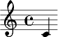

LilyPondy is a set of Google Wave extensions which lets you include and edit musical examples in your waves typeset using LilyPond, the automated music engraving system.
LilyPond has a simple syntax. If you are not familiar with it, you can start learning it here.
You can install the extensions from the public wave entitled LilyPondy Extension Installer. Search for lilypondy extension installer with:public, and in the first search result, click Install extension.
After installation, when you're writing a wave, you can use the Add Score toolbar icon to insert a score at the cursor position. Or alternatively, you can add the gadget manually from http://lilypondy.appspot.com/gadget/score.xml.
A text box appears in which you can edit the LilyPond source. While editing, you can resize it with the arrows to fit the text; when you're done, submit it with the tick mark or by pressing Shift+Enter.
The LilyPond source is rendered after a while. You should see your score, or an error message if something went wrong. If you want to correct or augment it, you can update its source by clicking on the score and selecting Edit Source from the popup menu. You can also increase or decrease its size, or reset it to the default value.
There is a more convenient way to insert scores into your message: the robot will automatically recognize music fragments in your messages. Just create a New Wave with Auto-Scores from the New Wave menu. If you did not install the extension, or you want to enhance an already existing wave with this capability, add the robot at lilypondy@appspot.com as a participant to the wave.
You have to start and end LilyPond code snippets describing your music with a special string called tag: @@ (double at sign). When your message is submitted, LilyPond code snippets will be replaced with the gadget containing the corresponding sheet music.
For example, @@{ c' }@@ gets substituted by .
If you want to insert the tag (@@) into your message as text, write it twice (@@@@). Unfortunately, there is no way to insert the tag this way into LilyPond code snippets; you have to edit the LilyPond source of the score gadget after it is inserted.
In the background, LilyPond files are compiled by a web service: the heavy lifting is done in the cloud. Just like Google Wave, LilyPondy is also open in the sense that it not only uses LilyPond, the open source music typesetter, but also accepts any number of servers providing the LilyPond online compiler service, and distributes the load evenly among them.
Since LilyPond requires a lot of resources, servers hosting the service are always welcome. There are reference implementations in PHP or Java to suit your configuration. If you are willing to host it and set up a server, contact us and we will register your service provider. The community will be very grateful for the enhanced performance.
Bringing ease-of-use music notation to the powerful platform of Google Wave opens up nearly endless possibilities. Just several of these:
lilypond-book, wiki or word processor plugins for LilyPond offer, but in a WYSIWYG environment having a more collaborative nature.